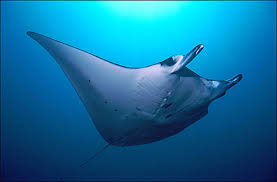

Raya Manta
La raya manta es una de las rayas más grandes y conocidas. Se caracteriza por sus enormes aletas en forma de ala y su comportamiento pelágico.
La raya manta es una de las rayas más grandes y conocidas. Se caracteriza por sus enormes aletas en forma de ala y su comportamiento pelágico.
La raya aguijón es conocida por el aguijón venenoso que tiene en la cola. Se encuentra en fondos marinos arenosos y es de comportamiento bentónico.
La raya de cinta tiene un patrón de colores brillantes y llamativos, y se encuentra comúnmente en arrecifes de coral y aguas costeras tropicales.
Con su distintivo color dorado, esta raya es conocida por su belleza y por su comportamiento en aguas costeras y poco profundas.
La raya eléctrica es famosa por su capacidad para generar descargas eléctricas, las cuales utiliza para la defensa y la captura de presas.
Es uno de los mayores peces de agua dulce del mundo, esta especie alcanza un peso máximo de 500–600 kg.
Esta especie recibe su nombre por la forma peculiar de su boca, que se asemeja a un cerdo. Vive en fondos marinos fangosos y se alimenta de invertebrados.
La raya pastinaca es conocida por su cuerpo aplanado y sus agudas espinas venenosas en la cola, que usa para defenderse de los depredadores.
| Especie | Envergadura Promedio | Hábitat | Dieta |
|---|---|---|---|
| Raya Manta | 4-7 m | Océanos tropicales y subtropicales | Plancton |
| Raya Aguijón | 1.5-2 m | Fondos marinos arenosos y fangosos | Pequeños peces y crustáceos |
| Raya de Cinta | 1-1.5 m | Arrecifes de coral y aguas costeras tropicales | Crustáceos y pequeños peces |
| Raya Dorada | 1.2-1.8 m | Aguas costeras poco profundas | Invertebrados y pequeños peces |
| Raya Eléctrica | 1-1.5 m | Aguas dulces y salobres | Pequeños peces y crustáceos |
| Raya gigante | 5-8 m | Aguas tropicales y templadas, desde la superficie hasta los 1.000 metros de profundidad. | zooplancton, como krill, huevos y larvas de peces, pequeños camarones, copépodos y larvas de cangrejos. |
| Raya de Boca de Cerdo | 1.2-1.5 m | Fondos marinos fangosos | Invertebrados |
| Raya Pastinaca | 1-1.8 m | Aguas tropicales y subtropicales | Crustáceos y peces pequeños |